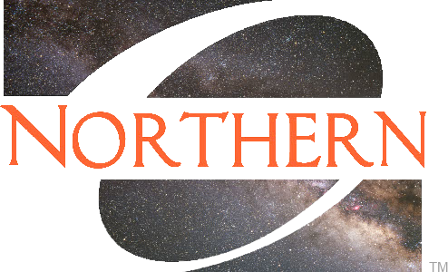

|
|
|
|  |
Record of Events at the ONU Observatory |
The ONU Observatory has been holding public events since Fall of 2010. These records are currently incomplete and somewhat irregular. (We're working on it.) Also, about half of these events were cancelled because of bad weather (the cancellation record tends to be worse in the spring than the fall).
Fall 2022 Schedule -- ONU Observatory
Maps to the ONU Observatory can be found
here.
Sunday, Aug 21, 8:30-9:30 pm -- ONU event. "Welcomefest Open House" Friday, Sept 16, 9:00-11:00 pm -- Public Event "Neptune at its closest" Friday, Sept 23, 8:00-10:00 pm -- Public Event. "Autumnal Equinox and Jupiter approaching opposition" Friday, Oct 21, 8:00-10:00 pm. -- Public Event. "Orionid Meteor Shower" --> Friday, Nov 11, 8:00-10:00 pm. -- Public Event. "Uranus at Opposition" Friday, Dec 9, 8:00-10:00 pm. -- Public Event. "Opposition of Mars" Printer-friendly version here. |
Fall 2021 Schedule -- ONU ObservatorySunday, Aug 22, 8:30-9:30 pm. -- ONU Event. "Welcomefest Meet-n-greet" Friday, Sept 24, 8:30-10:30 pm. -- ONU Event. "Jupiter and Saturn put on a show" Friday, Oct 8, 8:00-10:00 pm. -- ONU Event. "Draconid meteor shower" Friday, Oct 29, 8:00-10:00 pm. -- ONU Event. "Venus - high and bright" Friday, Dec 3, 8:00-10:00 pm. -- ONU Event. "Deep sky comets" Printer-friendly version here. |
Fall 2020 Schedule -- ONU ObservatoryRegretfully, the ONU Observatory will not be hosting public events in the foreseeable future until the covid-19 virus is under control. |
Spring 2020 Schedule -- ONU ObservatoryFriday, Feb 14, 7:00-8:00 pm. -- Public Event. "Venus, Goddess of Love"
Friday, Feb 28, 8:00-10:00 pm. -- Public Event. "Leap Days and Time" Friday, Mar 6, 8:00-10:00 pm. -- Public Event. "Moon in the Beehive" Friday, Mar 20, 8:30-10:30 pm. -- Public Event. "The Vernal Equinox" Friday, Mar 27, 9:00-11:00 pm. -- Public Event. "Venus at Greatest Elongation" Friday, Apr 17, 9:00-11:00 pm. -- Public Event. "Comet C/2017 T2 PANSTARRS" Friday, Apr 24, 9:00-11:00 pm. -- Public Event. "Galaxies of Spring" Printer-friendly version here. |
Fall 2019 Schedule -- ONU ObservatorySunday, Aug 25, 8:30-9:30 pm. -- ONU Event. "Welcomefest Meet-n-greet" Friday, Sept 20, 9:00-11:00 pm. -- Public Event. "Fall Star Party" Friday, Oct 4, 8:00-10:00 pm. -- Public Event. "Moon between Saturn and Jupiter" Friday, Oct 25, 8:00-10:00 pm. -- Public Event. "Blue planets in opposition" Monday, Nov 11, 10:00am -12:00 pm. -- Daytime Public Event. "The transit of Mercury across the Sun" |
Spring 2019 Schedule -- ONU ObservatoryFriday, Feb 1, 8:00-10:00 pm. -- Public Event. "The Fading Comets of 2019" Friday, Mar 1, 7:00-9:00 pm. -- Public Event. "Greatest elongation of Mercury" Friday, Mar 22, 9:00-11:00 pm. -- Public Event. "Vernal Equinox" Friday, Mar 29, 9:00-11:00 pm. -- Public Event. "Supernovae and their remnants" Friday, Apr 5, 9:00-11:00 pm. -- Public Event. "Galaxies of Spring" Friday, May 3, 9:00-11:00 pm. -- Public Event. "Eta Aquariid Meteors" |
Fall 2018 Schedule -- ONU ObservatorySunday, Aug 19, 9:00-10:00 pm. -- ONU Student Event. "Welcomefest Open House" Friday, Sept 7, 9:00-11:00 pm -- Public Event "Opposition of Neptune" Friday, Sept 21, 8:00-10:00 pm -- Public Event "Autumnal Equinox" Friday, Oct 12, 8:00-10:00 pm. -- Public Event. "Observe the Crescent Moon" Friday, Nov 9, 8:00-10:00 pm. -- Public Event. "Asteroids and OSIRIS-REx" Friday, Dec 7, 8:00-10:00 pm. -- Public Event. "Comet Wirtanen" |
Summer 2018 Schedule -- ONU ObservatoryM-W, June 11-13, 9:00-11:00 pm. -- Private Event. "Summer Academic Honors Institute (SAHI) -- Physics and Astronomy Camp"Monday, June 18, 9:00-10:30 pm. -- Private Event. "The Ada Library Summer Reading Program - The Night Sky" Monday, July 30, 9:30-11:00 pm. -- Public Event. "Opposition of Mars"
The ONU Observatory will be open to the public on Monday, July 30
from 9:30-11 pm, weather permitting. On this date, Mars will be
3 days passed its opposition. ``Opposition" is the planetary
configuration in which the planet appears in the opposite
direction as the Sun from the Earth's perspective. It is also
the time of closest approach to the Earth, making Mars look
bigger and brighter than usual.
This will be the closest we've come to Mars since the 2003
opposition (but that was the closest in about 60,000 years).
At 9:30 pm Mars will not quite be high enough to see with the
telescopes, but we will observe Venus, Jupiter and Saturn as we
wait for Mars to rise higher.
(We chose July 30 instead
of July 27 because the Full Moon interferes with our view of Mars
on the 27th. )
|
Summer 2017 Schedule
|
Spring 2017 ScheduleFriday, Jan 27, 8:00-10:00 pm. -- Public Event. "The ISS flies by Mars and Venus" Friday, Feb 17, 8:00-10:00 pm. -- Public Event. "Brilliant Venus" Friday, Mar 3, 8:00-10:00 pm. -- Public Event. "Craters and Maria of the Moon" Friday, Mar 17, 9:00-11:00 pm. -- Public Event. "Star Formation in Orion" Friday, Mar 31, 9:00-11:00 pm. -- Public Event. "Glimpse Mercury"-> "Comet Pours from Big Dipper" Friday, Apr 7, 9:00-11:00 pm. -- Public Event. "Jupiter at opposition" Friday, Apr 21, 9:00-11:00 pm. -- Public Event. "Galaxies of Spring" Printer-friendly version here. |
Fall 2016 Schedule -- ONU ObservatorySaturday, Aug 27, 6:30-8:00 pm. - Public Event. "Jupiter and Venus together!" Friday, Sept 9, 9:00-11:00 pm. - Public Event. "Explore the Crescent Moon" Friday, Sept 30, 8:00-10:00 pm. - Public Event. "Mars Near the Lagoon" Friday, Oct 21, 8:00-10:00 pm. -- Public Event. "Orionid Meteor Shower" Friday, Nov 4, 8:00-10:00 pm. -- Public Event. "The Blue Planets: Uranus and Neptune" Friday, Nov 25, 8:00-10:00 pm. -- Public Event. "What We Learned From New Horizons" Maps to the ONU Observatory: http://jpastro.net/astro/ONUObservatory.html
For weather cancellations see: http://jpastro.net/astro/publicevents.html |
Spring 2016 ScheduleFriday, Feb 5, 8:00-10:00 pm. - Public Event. "Comet C/2013 US10 Catalina" Friday, Feb 12, 8:00-10:00 pm. - Public Event. "Where Have the Bright Planets Gone?" Friday, Mar 11, 9:00-11:00 pm. -- Public Event. "Jupiter's Shrinking Red Spot" Friday, Apr 1, 9:00-11:00 pm. -- Public Event. "Galaxies of Spring" Friday, Apr 15, 9:00-11:00 pm. -- Public Event. "Craters and Maria of the Moon" Monday, May 9, 9:00-11:00 AM. -- Public Event. "Mercury transits the Sun! (7:15am-2:30 pm)" |
Fall 2015 ScheduleSunday, August 23, 8:30-10:30 pm. -- ONU event. "Welcomefest - Astronomy Club Open House"Friday, Sept 4, 8:30-10:30 pm. -- Public Event. "Saturn and Mercury setting early" Sunday, Sept 27, 9:00-11:00 pm. -- Public Event. "Total Lunar Eclipse" Friday, Oct 9, 8:00-10:00 pm. -- Public Event. "Tears from the Dragon" Friday, Oct 16, 8:00-10:00 pm. -- Public Event. "The Andromeda Galaxy" Friday, November 13, 8:00-10:00 pm. -- Public Event. "What we've learned of Pluto." Friday, December 11, 8:00-10:00 pm. -- Public Event. "The Geminid Meteor Shower" |
Spring 2015 ScheduleMonday, Jan 26, 8:00-10:00 pm. -- Public event. "Asteroid Close Encounter"Friday, Feb 6, 8:00-10:00 pm. -- Public Event. "The Opposition of Jupiter" Friday, Mar 20, 9:00-11:00 pm. -- Public Event. "Spring Equinox and a New Moon" Friday, Apr 10, 9:00-11:00 pm. -- Public Event. "Galaxies of Spring" Friday, Apr 24, 9:00-11:00 pm. -- Public event. "Craters and Maria; Observing the Moon" Friday, May 8, 9:00-11:00 pm. -- Public Event. "Spot Mercury and Venus" |
Fall 2014 ScheduleFriday, August 29, 8:30-10:30 pm. -- Public event. "Comet Rendezvous / Neptune Opposition"Friday, Sept 19, 8:30-10:30 pm. -- Public Event. "The Andromeda Galaxy" (Time change to 8:30.)
Note: On the morning of Wednesday, Oct 8, there will be a Total Lunar Eclipse visible from Ada, OH. No observatory event is planned because of the early hour. The Earth's umbra begins to cover the Moon around 5:15 am EDT and the Moon sets during totality, around 7:30 am EDT. It should be a beautiful sight and no telescope is needed.
Friday, October 17, 8:00-10:00 pm. -- Public Event. "The Opposition of Uranus" Friday, October 31, 8:00-10:00 pm. -- Public Event. "Halloween and the Moon" Friday, November 14, 8:00-10:00 pm. -- Public event. "Seeing in the Leonids" Friday, December 12, 8:00-10:00 pm. -- Public Event. "The Geminid Meteor Shower" |
Spring 2014 ScheduleFriday, January 31, 8:00 - 10:00 pm. -- Public event. "Supernova in M82!"Friday, February 21, 8:00-10:00 pm. -- Public Event. "Star formation in Orion" Friday, March 7, 8:00-10:00 pm. -- Public Event. "The Moon in Taurus" Friday, March 21, 8:00-10:00 pm. -- Public event. "Asteroids and Occultations"
Note: On the morning of Tuesday, April 15, there will be a Total Lunar Eclipse. No observatory event is planned because of the late hour. Totality begins around 3:06 am EDT and continues until 4:24 EDT. It should be a beautiful sight, with Saturn, Mars and Spica all within 23 degrees of the Moon.
Saturday, April 19, 9:00-11:00 pm. TIME CHANGED! -- Public Event. "Mars near opposition."
Friday, May 2, 9:00-11:00 pm. -- Public Event. "Saturn near opposition." |
Fall 2013 ScheduleFriday, September 6, 8:00 - 10:00 pm. --- "Venus passing the Virgin" Public event. --DoneFriday, September, 27, 8:00 - 10:00 pm -- "The Andromeda Galaxy" Public event.--Done Friday, October 4, 8:00 - 10:00 pm -- "Opposition of the Green Planet" --Done Friday, October 18, 8:00 - 10:00 pm. --- "Penumbral Lunar Eclipse" Public Event (during "Experience ONU Day"). --Done Friday, November 1, 7:30 - 9:30 pm. --- "Maximum Elongation for Venus" Public Event. --Done Friday, November 22, 9:00 - 11:00 pm. --- "Jupiter is Back!" Public Event.--Done Friday, December 6, 8:00 - 10:00 pm. --- "Mira, the Miracle Star" Public Event.--Done
NOTE: Why no event for Comet ISON?
Comet ISON should be in the news in November and December as a spectacular comet (if it isn't destroyed in its close pass by the Sun). However, it does not become viewable in the early evening until about Dec 21. Instead, throughout most of November and December it will be viewable in the East before sunrise.
|
Summer 2013 ScheduleMonday, August 12, 9 -12 pm. --- "The Perseid Meteor Shower!" DoneFriday, May 31, 9:00 - 11:00 pm. --- "Tic-Tac-Toe 3 planets in a row" Public event. Done |
Spring 2013 Schedule
NEW: bring your iphone to any event! We can help you take a picture of bright objects through the telescopes.
Friday, Feb 1, 8:00 - 10:00 pm. --- "Star formation in Orion." Public event. --Done
Friday, Feb 15, 8:00 - 10:00 pm. --- "Close call Friday: Near Earth Asteroids." Public event.-- Done Friday, Mar 1, 8:00 - 10:00 pm. --- Jupiter and the Moon Public Event. -- Done Friday, Mar 15, 7:45 - 10:00 pm. --- "Comet PanSTARRS: the first great comet of 2013?" Public Event. -- Done Friday, Apr 5, 8:30 - 10:30 pm. --- "Galaxies of Spring" Public Event. -- Done Friday, April 19, 8:30 - 10:30 pm. --- "Craters of the Moon" Public Event. (Moon just past 1st quarter.) -- Done Friday, May 3, 9:00 - 11:00 pm --- "Saturn is back!" Public Event. (Saturn's opposition is on April 28.) -- Done |
Fall 2012 ScheduleFriday, September 21, 8:00 - 10:00 pm. --- "Autumnal equinox" Public event --Done.Friday, October 12, 8:00 - 10:00 pm. --- "Experience ONU Day" Public Event --Done. >>If the skies are clear, we plan to track down a new Comet, Uranus, and deep sky objects like the Ring Nebula and the Andromeda Galaxy in our telescopes. Weather forecast (as of Fri afternoon) is for clear skies and 40-45 degrees F. Friday, November 2, 8:00 - 10:00 pm. --- "Comet Hergenrother flies through Pegasus" Public Event --Done. >> Tonight's featured target will be Comet 168/P Hergenrother which is well-placed for observing in the constellation of Pegasus. This comet has been brighter than expected and is sporting a short tail. We will also observe various deep sky objects, such as the Saturn Nebula and the Andromeda Galaxy. Later in the evening, the planet Jupiter will rise in the east, followed closely by the Moon. Saturday, November 17, 8:00 - 10:00 pm. --- "Leonid Meteor Shower" Public Event --Done. Tonight's event is chosen to coincide with the peak of the Leonid Meteor Shower. This annual shower has periodically produced "storms" of meteor activity, but tonight it is only expected to produce 10-15 meteors/hour for a given viewer. Meteors are also called "shooting stars". They are the sand-grain-sized debris of comets that enter the Earth's atmosphere so quickly that they create a bright streak of light. The Leonid meteors originated in the Comet Temple-Tuttle. We will also observe various deep sky objects, the crescent moon, and planets like Uranus and Jupiter. Friday, December 7, 8:00 - 10:00 pm. --- "Jupiter at its Brightest" Public Event --Done. Jupiter recently passed through opposition on December 2. Opposition is the configuration in which a planet appears from Earth to be in the opposite direction as the Sun. This is also the time in which the planet looks the brightest to us because of its full phase and its proximity to the Earth. During tonight's event, Jupiter is still nearly optimal in appearance, and so we will keep it in at least one telescope all night. In two hours, the planet rotates 1/5 of a full revolution and we will watch for moving features like the Great Red Spot and shadows cast by its moons. The view to the unaided eye is also spectacular since Jupiter will be embedded in bright winter asterisms like the Pleiades and Orion, and less than 5 degrees from the orange star Aldebaran. We plan to keep a live Jupiter video feed on our wall TV for easy viewing. Other targets tonight may be the Great Orion Nebula, the Pleiades, and Uranus. If you've already seen these, feel free to request something new! |
| The ONU Observatory will be
open to the public
on Friday, Aug 31, from 8:00 - 10:00 PM (EDT).
The theme of the event is "The Blue Moon", since the Aug 31 full moon
will be the second
full moon in August. A short presentation will
be given around 8:30 PM about the term "blue moon"
and explain that the full moon of Aug 31 does not
actually qualify as a blue moon under the original definition. The full
Moon will be rising dramatically in
the East after the Sun sets around 8:00.
A telescope will be used to project the Moon's image onto a screen,
while other telescopes will be tracking other interesting objects in
the sky. Return to this web page on the afternoon of Aug 31 for possible cancellations due to the weather. This event was, unfortunately, clouded out. |
| The ONU Astronomy Club will host an
Open House at the observatory.
Incoming students, new and old, are invited to drop by. (Sign up
for the Astro Club while you're there!) The roof
will be rolled back for viewing the sky if the weather permits;
if it is cloudy, we will still be open for tours. But in the
case of heavy rain, we will cancel the tours. Saturn and Mars will be low in the southwest after sunset. |
| The ONU Observatory will be
open to the public on
Saturday evening the night of Aug 11-12 from 10:00 PM
to 1 AM to "see in" the annual Perseid Meteor shower.
The actual peak in shower activity should occur
on the night of Aug 12-13 this year, but the meteors (or "shooting
stars") are visible over 5 days before and after this peak . The Moon
will not be up to interfere with the viewing. Perseid meteoroids are fragments of the comet 109P/Swift-Tuttle which are usually smaller than a pea. The meteors radiate away from the constellation Perseus, sometimes exhibiting colors and glowing trains. One does not need a telescope to view the Perseids, but our roll-off roof observatory serves as a nice setting to view them. Also, the telescopes will be in operation so you can take a break from meteors to view planets or deep sky objects. You are encouraged to bring a lawnchair to set up on the fields next to the observatory. See you there! Return to this web page on the afternoon of Aug 11 for possible cancellations due to the weather. This event was held, but cloudcover increased steadily until viewing was impossible. |
| The ONU Observatory will be open to
the public to view the
transit of Venus on Tuesday, June 5 from 7 to 8 PM. Here Venus
will pass between the Earth and the Sun so that it appears
as a small, dark silhouette on the face of the Sun. This is a rare
event, with the next one not occurring until December of 2117 (105
yrs). Transits of Venus played an important role in the history of astronomy. The distance to Venus can be found using trigonometric parallax if two observers on Earth can record the ingress and egress times from widely separated locations. With the distance to Venus known, one can calculate the average distance between the Earth and the Sun (the Astronomical Unit, 92,955,807 miles), which is essential for finding the distance to everything else in the universe. The first voyage of James Cook was a mission to observe the 1761 transit of Venus from Tahiti. Subsequent expeditions to observe transits of 1769, 1874 and 1882 allowed more precise timings as astronomers learned how to deal with an optical phenomenon called the ``black drop effect". We will provide several safe ways to view the event, including looking through small telescopes with solar filters, and eyepiece projections onto screens. Unlike the recent solar eclipse, successful viewing requires a telescope. Our views will also reveal sunspots on the Sun, which is currently active. Return to this web page on the afternoon of June 5 for possible cancellations due to cloudy weather. This event was a success! The sky became mostly clear around 6:30 pm. |
| The ONU Astronomy Club is hosting a
public viewing event called "The
Delta Aquarid Meteors" on Friday, July 29. The ONU Observatory will be
open from 9:30-11 PM. The Southern Delta Aquarid Meteor shower peaks
around
this date every year. It produces about 20 meteors per hour. This
should be a good night to observe them, weather permitting, because the
Moon won't be out.
Meteors are best viewed with the naked eye, but we will also have our
telescopes tracking Saturn and various deep sky objects. This event was cancelled because of clouds and telescope repairs. |
| The ONU observatory will be
open to ONU Alumni visiting on Alumni
weekend (June 3-5, 2011). The hours will be 8:30-10:30 PM.
Notice that it opens well before twilight, but we should still be
able to view the crescent moon through the telescopes.
If you want to get a better look at the night sky, come between 9:30
and 10:30.
this web site before making the trip. This ONU event is was a success. |
| The ONU Astronomy Club is hosting a
public viewing event
called "The
Galaxies of Spring" on Friday, May 6. The ONU observatory will be open
from 9:00-11:00 PM. The telescopes will first follow the
crescent
Moon as it descends in the West, followed by Saturn, as it rises in the
East. After twilight, we will hunt down some galaxies near
the North Galactic Pole, which will be well-placed near the
meridian. The event will be canceled if the forecast on the
afternoon of May 6 calls for cloudy skies. Please consult
this web site before making the trip. This public star party was a success! |
| The ONU Astronomy Club is hosting a
public viewing event
called "Saturn's Serpent Storm" on Friday, March 25. The time
for this one is 9-11 PM (later than previous events because
of the later sunset). The main attraction will be Saturn
which is rising around 9 PM. It has been in the news for
an unusual storm called the "Serpent Storm" roiling in its
northern hemisphere. This feature was discovered by amateurs
in December, 2010. It should be visible in our telescopes, along
with the spectacular rings and moons of Saturn. The event will be canceled if the forecast on the afternoon of Mar 25 calls for cloudy skies. Please consult this web site before coming. This public star party was a success. |
| The
ONU Astronomy Club invites ONU, Ada, and the surrounding communities to
visit the ONU Observatory for a public viewing on Friday, Feb 18, from
8:00 pm to 10:00 pm. It
happens to be the night of a Full Moon, so the Moon will be a target
for our telescopes when it rises. We will also look at Jupiter,
the Orion Nebula, and other deep sky objects. This will be the
first event in which a live video image through a telescope will be
displayed! The new observatory has a control room and public
bathrooms which are kept warm. However, dress warmly because the
roof rolls off of the main observatory deck. The event will be canceled if the forecast on the afternoon of Feb 18 calls for cloudy skies, or if excessive ice is built up on the roof. Please consult this web site before coming. This public star party was a success! |
| The
ONU Astronomy Club invites ONU, Ada, and the surrounding communities to
visit the ONU Observatory for a public viewing on Friday, Jan 28, from
8:00 pm to 10:00 pm. The theme of this viewing will be "Star formation in
Orion". The event will be canceled in the event of cloudy weather. Please consult this web site. This public star party was CANCELED due to the cloudy forecast. :-( |
|
The
ONU Astronomy Club invites ONU, Ada, and the surrounding communities to
visit the ONU Observatory for a public viewing on Friday, Jan 14 from
8:00 pm to 10:00 pm. The Moon, Uranus, and Jupiter will be prime
targets for the telescopes. You can see craters and mountains on the
Moon, the pale green disk of Uranus, and the Moons and belts around
Jupiter, the most massive planet in the solar system. |
|
As
a holiday send-off for ONU and the Ada community, the ONU Astronomy
Club wishes to open the new campus observatory during this splendid
annual meteor shower. Come by any time between 8 pm and 10 pm on
Tuesday night provided that it is clear. |
|
Dean Catherine Albrecht, in conjunction with the Department of Physics and Astronomy students, faculty, and staff invites certain alumni and friends of ONU to the University’s newest stellar teaching and research facility. Weather permitting, night sky viewing is scheduled. The
Homecoming Open House event was a success! An estimated 70 people
attended. A "thanks" to all of our visitors. |
|
The
Welcomefest event is contingent on completion of the Observatory. |
Return to ONU Physics
Return to ONU